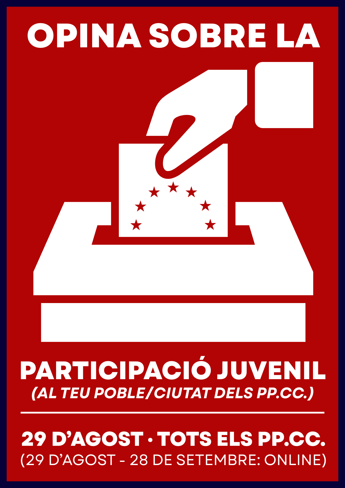

La gran consulta juvenil dels Països Catalans per conèixer com participa la joventut als barris, pobles, ciutats, instituts, universitats, associacions i espais comunitaris.

Un estudi participatiu impulsat des de la joventut per recollir opinions sobre la participació juvenil als Països Catalans i elaborar una radiografia territorial de la realitat dels joves.
Analitzar la implicació dels joves als municipis i barris.
Conèixer la vida associativa i estudiantil als campus.
Estudiar la presència juvenil en entitats i col·lectius.
La jornada presencial del 29 d'agost es desenvoluparà simultàniament en diversos punts dels Països Catalans. La xarxa territorial continua oberta a noves incorporacions.
La macroenquesta continua ampliant la seva presència territorial. Si vols impulsar un punt de participació al teu municipi, barri o universitat, contacta amb l'organització.
La macroenquesta també arribarà als campus universitaris dels Països Catalans mitjançant equips de voluntariat, estudiants i col·laboradors.
Preparació, captació de voluntariat i difusió.
Coordinació territorial i campanya final.
Macroenquesta presencial simultània als Països Catalans.
Recollida de respostes online.
Publicació dels resultats.
Uneix-te a la xarxa de voluntariat de la macroenquesta.